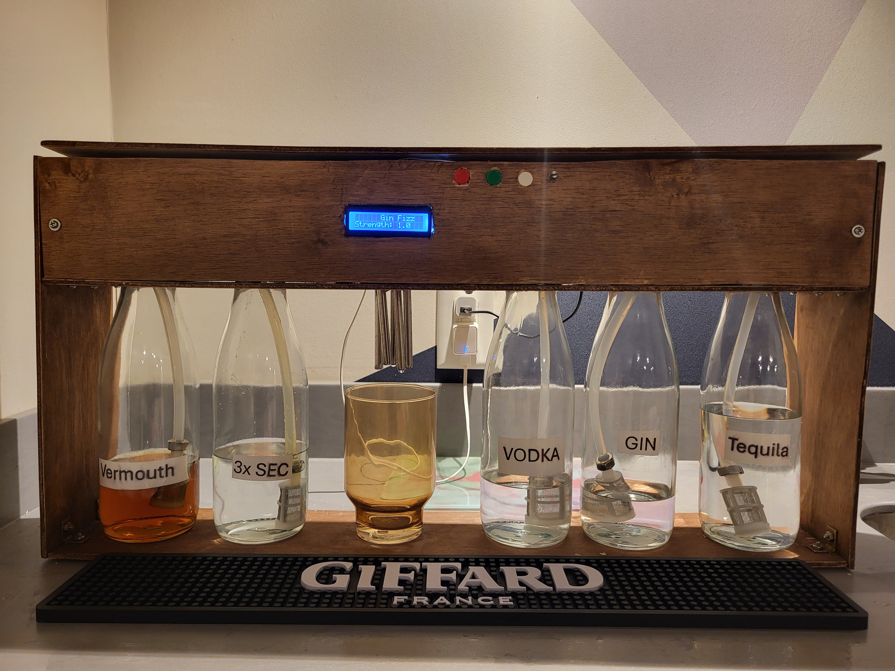

Robot Bartender Prototype
Project Inspiration
This idea was inspired by my uncle showing me an advertisement for the Bartesian last Christmas. The robot has a predetermined list of cocktail inputs that the user can choose from as well as an adjustable strength knob.
Design Process
When I started the project, the microcontroller card I wanted to use was on back order. This led me to look around in all the parts I had accumulated over years of electronic tinkering, and I found a Raspberry Pi Pico.
I decided on simple food grade pumps for the first version of the prototype. After ordering all the necessary parts, I started building the hardware part of the project by verifying that the Raspberry Pi Pico could drive the pumps.
Implementation
The software development involved calibrating the system regarding time for the pumps. After completing all theoretical calculations, I tested the timing and finished building the prototype.
Future Improvements
- Add a temperature controlled compartment using Peltier modules
- Change the microcontroller and add a touchscreen interface
- Add sensors to detect low product levels
- Design a custom PCB for the hardware
- Develop a mobile app for control